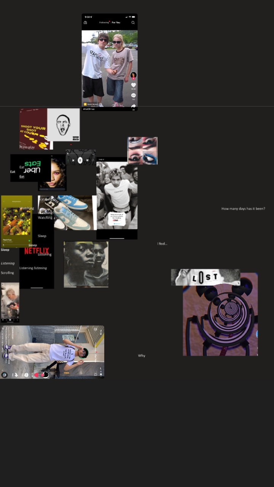

Second attempt
*Click image to go to next step*
In my step two of this assignment I looked back on the project and got to the conclusion of a diffrent outcome. I wanted this to become more lonley and
less clear as that were some effects that covid had brought on. The disconection I had with my work did compare because now my poster did not relate to what
I wanted to say. after our critque I was shown by my classmates that they liked my original idea and it related more to the project than the one I had just created.
